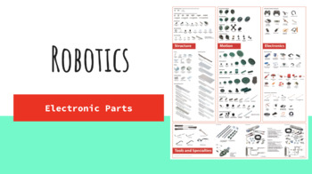

Learn about key components like resistors, capacitors, and microcontrollers used in robotics.
Electronics play a critical role in robotics, providing the necessary hardware to control motors, read sensor data, and communicate with other devices. In this tutorial, we'll cover the basic components that you'll use in your robotics projects.
A resistor limits the flow of electric current in a circuit. They're used to control the current flowing to sensitive components.
Unit: Ohms (Ω)
Example: In an LED circuit, a resistor ensures the current doesn't burn out the LED.
A capacitor stores electrical energy and releases it when needed. They're often used to smooth voltage spikes or stabilize power supplies.
Unit: Farads (F)
LEDs are used to display status or give feedback in a circuit. They only allow current to flow in one direction.
Example: An LED on your robot might turn on when the battery is charged.
Microcontrollers are the brains of your robot, where your code runs. They take input from sensors, process it, and control outputs like motors.
Examples: Arduino, Raspberry Pi, ESP32
// Arduino Example
int ledPin = 13; // Define pin 13 for the LED
void setup() {
pinMode(ledPin, OUTPUT); // Set the LED pin as output
}
void loop() {
digitalWrite(ledPin, HIGH); // Turn on LED
delay(1000); // Wait for 1 second
digitalWrite(ledPin, LOW); // Turn off LED
delay(1000); // Wait for 1 second
}
Sensors are used to detect the environment and provide input to your robot. Here are a few common sensors:
It uses sound waves to measure the distance to an object.
#include
NewPing sonar(12, 13, 200); // (Trig pin, Echo pin, Max distance)
These sensors detect obstacles using infrared light. Commonly used for line-following robots.
A temperature sensor can measure the ambient temperature, often used for robots with temperature-sensitive parts.
Motors allow your robot to move. Depending on your robot's design, you can use different types of motors:
These are simple motors that spin continuously in one direction when powered.
These motors rotate to a specific angle, making them perfect for precise movements.
These motors rotate in precise steps, offering highly accurate positioning.
// Example for controlling a motor with Arduino
int motorPin = 9;
void setup() {
pinMode(motorPin, OUTPUT);
}
void loop() {
digitalWrite(motorPin, HIGH); // Turn motor on
delay(1000); // Wait for 1 second
digitalWrite(motorPin, LOW); // Turn motor off
delay(1000); // Wait for 1 second
}
Now that you understand the fundamental electronic components used in robotics, you can start building circuits to power your robot. Experiment with different sensors, actuators, and microcontrollers to bring your ideas to life!